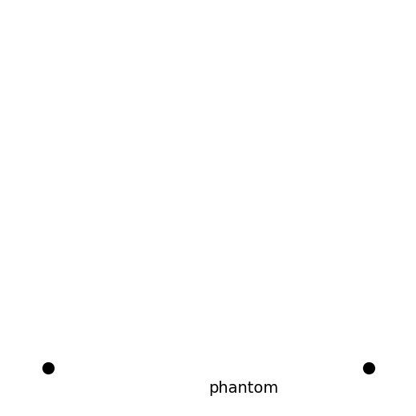

phantom
Phantom is used as a utility connection and rendered as nothing.
[1]:
import pyfeyn2
[2]:
from pyfeyn2.render.all import AllRender
ar = AllRender().demo_propagator("phantom")
pyx:
pyx failed:
Traceback (most recent call last):
File "/home/apn/data/de.neuwirthinformatik.Alexander/Development/git/pyfeyn2/pyfeyn2/render/all.py", line 66, in render
render(fd).render(dirpath + "/" + name + ".pdf", **dynarg)
File "/home/apn/data/de.neuwirthinformatik.Alexander/Development/git/pyfeyn2/pyfeyn2/render/pyx/pyxrender.py", line 49, in render
pyxfd.draw(file)
File "/home/apn/data/de.neuwirthinformatik.Alexander/Development/git/pyfeyn2/pyfeyn2/render/pyx/diagrams.py", line 78, in draw
c.writetofile(outfile, page_bbox=c.bbox().enlarged(enlargement))
File "/home/apn/.cache/pypoetry/virtualenvs/pyfeyn2-CEvJ4jFG-py3.9/lib/python3.9/site-packages/pyx/canvas.py", line 50, in wrappedindocument
return method(d, file, **write_kwargs)
File "/home/apn/.cache/pypoetry/virtualenvs/pyfeyn2-CEvJ4jFG-py3.9/lib/python3.9/site-packages/pyx/document.py", line 206, in writetofile
method(self, f, **kwargs)
File "/home/apn/.cache/pypoetry/virtualenvs/pyfeyn2-CEvJ4jFG-py3.9/lib/python3.9/site-packages/pyx/pdfwriter.py", line 340, in __init__
registry.write(file, self, catalog)
File "/home/apn/.cache/pypoetry/virtualenvs/pyfeyn2-CEvJ4jFG-py3.9/lib/python3.9/site-packages/pyx/pdfwriter.py", line 78, in write
object.write(file, writer, self)
File "/home/apn/.cache/pypoetry/virtualenvs/pyfeyn2-CEvJ4jFG-py3.9/lib/python3.9/site-packages/pyx/pdfwriter.py", line 254, in write
file.write("/MediaBox [%f %f %f %f]\n" % self.PDFcontent.bbox.highrestuple_pt())
File "/home/apn/.cache/pypoetry/virtualenvs/pyfeyn2-CEvJ4jFG-py3.9/lib/python3.9/site-packages/pyx/bbox.py", line 112, in highrestuple_pt
raise ValueError("Cannot return high-res tuple for empty bbox")
ValueError: Cannot return high-res tuple for empty bbox
feynmp:
This is LuaHBTeX, Version 1.13.0 (TeX Live 2021 Gentoo Linux)
system commands enabled.
(/tmp/tmpjl0wfy2m/feynmp.tex
LaTeX2e <2020-10-01> patch level 4
L3 programming layer <2021-02-18>
(/usr/share/texmf-dist/tex/latex/standalone/standalone.cls
Document Class: standalone 2018/03/26 v1.3a Class to compile TeX sub-files stan
dalone
(/usr/share/texmf-dist/tex/latex/tools/shellesc.sty)
(/usr/share/texmf-dist/tex/generic/iftex/ifluatex.sty
(/usr/share/texmf-dist/tex/generic/iftex/iftex.sty))
(/usr/share/texmf-dist/tex/latex/xkeyval/xkeyval.sty
(/usr/share/texmf-dist/tex/generic/xkeyval/xkeyval.tex
(/usr/share/texmf-dist/tex/generic/xkeyval/xkvutils.tex
(/usr/share/texmf-dist/tex/generic/xkeyval/keyval.tex))))
(/usr/share/texmf-dist/tex/latex/standalone/standalone.cfg)
(/usr/share/texmf-dist/tex/latex/base/article.cls
Document Class: article 2020/04/10 v1.4m Standard LaTeX document class
(/usr/share/texmf-dist/tex/latex/base/size10.clo))
(/usr/share/texmf-dist/tex/generic/luatex85/luatex85.sty)
(/usr/share/texmf-dist/tex/generic/pdftexcmds/pdftexcmds.sty
(/usr/share/texmf-dist/tex/generic/infwarerr/infwarerr.sty)
(/usr/share/texmf-dist/tex/generic/ltxcmds/ltxcmds.sty)))
(/usr/share/texmf-dist/tex/latex/base/fontenc.sty
(/usr/share/texmf-dist/tex/latex/lm/t1lmr.fd))
(/usr/share/texmf-dist/tex/latex/base/inputenc.sty
Package inputenc Warning: inputenc package ignored with utf8 based engines.
) (/usr/share/texmf-dist/tex/latex/lm/lmodern.sty)
(/usr/share/texmf-dist/tex/latex/base/textcomp.sty)
(/usr/share/texmf-dist/tex/latex/lastpage/lastpage.sty)
! LaTeX Error: File `feynmp-auto.sty' not found.
Type X to quit or <RETURN> to proceed,
or enter new name. (Default extension: sty)
Enter file name:
! Emergency stop.
<read *>
l.10 \begin
{document}%
375 words of node memory still in use:
2 hlist, 1 rule, 1 dir, 3 kern, 1 glyph, 3 attribute, 48 glue_spec, 3 attrib
ute_list, 1 write nodes
avail lists: 2:16,3:2,4:1,5:2,7:2,9:3
! ==> Fatal error occurred, no output PDF file produced!
Transcript written on feynmp.log.
feynmp failed:
Traceback (most recent call last):
File "/home/apn/data/de.neuwirthinformatik.Alexander/Development/git/pyfeyn2/pyfeyn2/render/all.py", line 66, in render
render(fd).render(dirpath + "/" + name + ".pdf", **dynarg)
File "/home/apn/data/de.neuwirthinformatik.Alexander/Development/git/pyfeyn2/pyfeyn2/render/latex/metapost.py", line 36, in render
super().render(
File "/home/apn/data/de.neuwirthinformatik.Alexander/Development/git/pyfeyn2/pyfeyn2/render/latex/latex.py", line 55, in render
self.generate_pdf(
File "/home/apn/.cache/pypoetry/virtualenvs/pyfeyn2-CEvJ4jFG-py3.9/lib/python3.9/site-packages/pylatex/document.py", line 250, in generate_pdf
output = subprocess.check_output(command,
File "/usr/lib/python3.9/subprocess.py", line 424, in check_output
return run(*popenargs, stdout=PIPE, timeout=timeout, check=True,
File "/usr/lib/python3.9/subprocess.py", line 528, in run
raise CalledProcessError(retcode, process.args,
subprocess.CalledProcessError: Command '['lualatex', '-shell-escape', '--interaction=nonstopmode', '/tmp/tmpjl0wfy2m/feynmp.tex']' returned non-zero exit status 1.
tikz:
Error: /undefined in --runpdf--
Additional information: [/PageSize [113.386 0]]
Operand stack:
--nostringval-- --dict:5/14(L)-- --dict:5/14(L)-- --dict:5/14(L)-- MediaBox --nostringval-- 0 0 false ( **** Error: PDF interpreter encountered an error processing the file.\n)
Execution stack:
%interp_exit .runexec2 --nostringval-- runpdf --nostringval-- 2 %stopped_push --nostringval-- runpdf runpdf false 1 %stopped_push 1990 1 3 %oparray_pop 1989 1 3 %oparray_pop 1977 1 3 %oparray_pop 1978 1 3 %oparray_pop runpdf
Dictionary stack:
--dict:775/1123(ro)(G)-- --dict:0/20(G)-- --dict:76/200(L)-- --dict:19/20(L)--
Current allocation mode is local
Last OS error: No such file or directory
GPL Ghostscript 10.00.0: Unrecoverable error, exit code 1
tikz failed:
Traceback (most recent call last):
File "/home/apn/data/de.neuwirthinformatik.Alexander/Development/git/pyfeyn2/pyfeyn2/render/all.py", line 66, in render
render(fd).render(dirpath + "/" + name + ".pdf", **dynarg)
File "/home/apn/data/de.neuwirthinformatik.Alexander/Development/git/pyfeyn2/pyfeyn2/render/latex/latex.py", line 61, in render
wi = WImage(
File "/home/apn/.cache/pypoetry/virtualenvs/pyfeyn2-CEvJ4jFG-py3.9/lib/python3.9/site-packages/wand/image.py", line 9326, in __init__
self.read(filename=filename)
File "/home/apn/.cache/pypoetry/virtualenvs/pyfeyn2-CEvJ4jFG-py3.9/lib/python3.9/site-packages/wand/image.py", line 10075, in read
self.raise_exception()
File "/home/apn/.cache/pypoetry/virtualenvs/pyfeyn2-CEvJ4jFG-py3.9/lib/python3.9/site-packages/wand/resource.py", line 225, in raise_exception
raise e
wand.exceptions.DelegateError: FailedToExecuteCommand `'gs' -sstdout=%stderr -dQUIET -dSAFER -dBATCH -dNOPAUSE -dNOPROMPT -dMaxBitmap=500000000 -dAlignToPixels=0 -dGridFitTT=2 '-sDEVICE=pngalpha' -dTextAlphaBits=4 -dGraphicsAlphaBits=4 '-r100x100' -dPrinted=false '-sOutputFile=/tmp/magick-G_33G88iL8DPefKlxtR4_xHs-E4P8yv5%d' '-f/tmp/magick-BtU2NRTOcXwe8olrPCXiVyUB7QmFlOWm' '-f/tmp/magick-wk_qEIj_XT3ChlRZIYbnXlNPJLqxEne8'' (256) @ error/ghostscript-private.h/ExecuteGhostscriptCommand/74
dot:
feynman:
mpl:

ascii:
unicode: